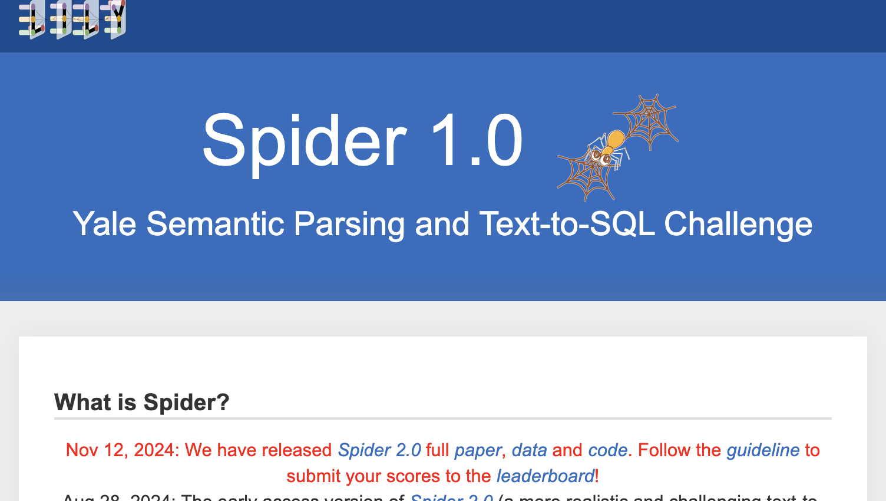
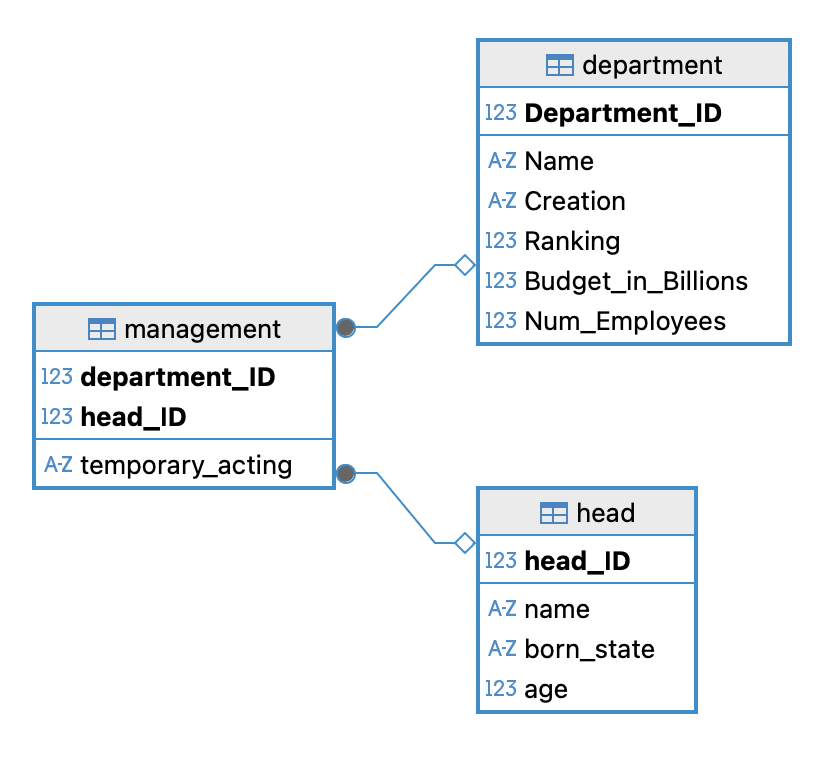
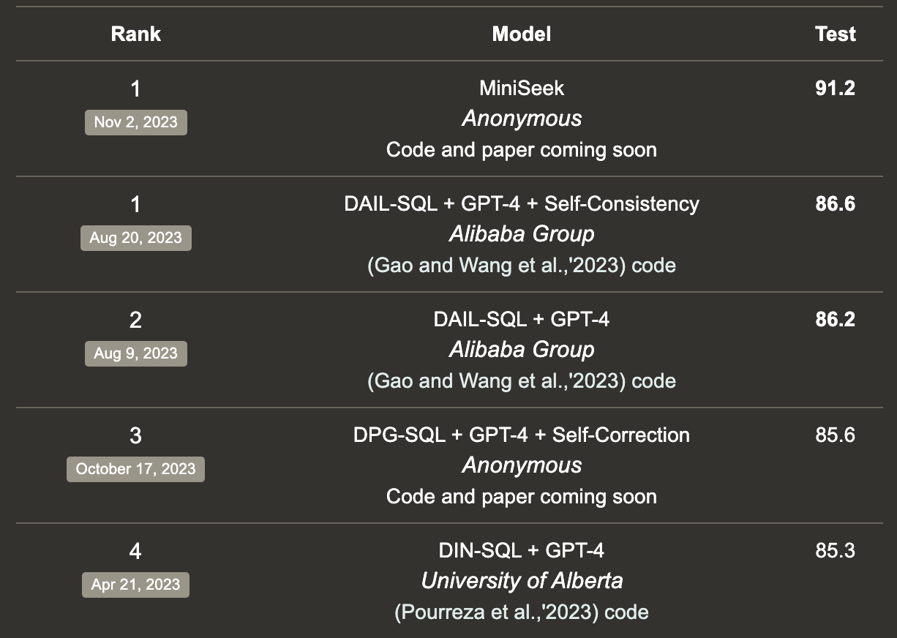
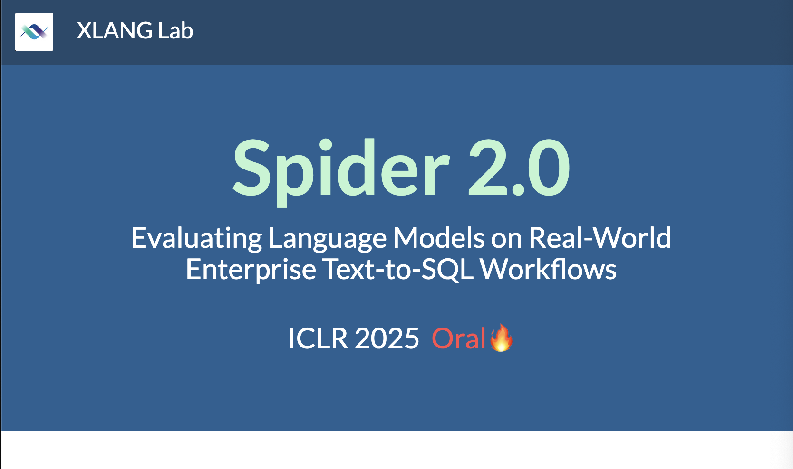
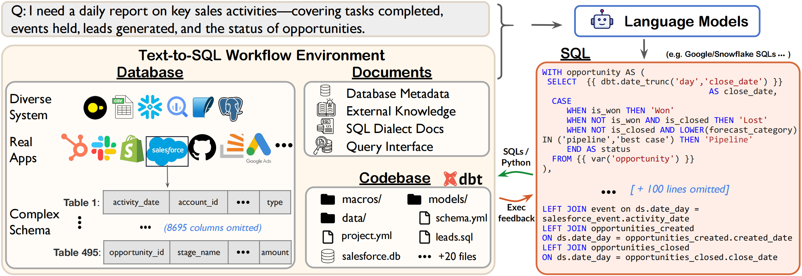
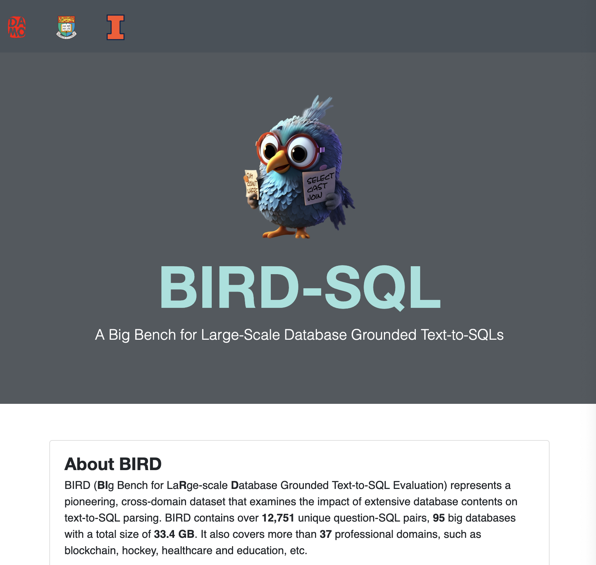

Current OSS tooling
- 🦜 ⛓️ LangChain:
Q/A over SQL data
print(1)Pydantic AI
2- PyDantic’s AI SQL workbench
Common challenges
- Some databases have specific dialects, e.g. SQLite, Postgres, MySQL, Oracle, db2, etc.
- The training set of the models may not have a sufficient examples for the database engine we’re interested in.
- Providing tables is great, but some times, schemas are quite big and the table and column names may be not human friendly.
Pipelines
Our work was focused on prompt optimization by a small team, but as our teams tarted to grown we needed to allow different research team to focus on different areas.
We created a framework inspired in LangGraph tailored to the text2sql generation.
import os
a = {"a": 1}Relevant challenges
- 🥴 Models can hallucinate making up inexistent tables, columns or functions
- SQL dialects have their nuances (SQLite, Postgres, MySQL)
- e.g. date manipulation,
CURDATE()vsCURRENT_DATEvsGETDATE()vsSYSDATE
- e.g. date manipulation,
- 🔒 Confidentiality of the data sent to the LLMs
- Can I run it on prem?
These are challenges relevant in the B2B space, where I work.
Date manipulation MySQL/PostgreSQL/SQL Server/Oracle
What we’re learning today
- Create and validate existing state of the art techniques in the text to SQL space…
- Starting with public datasets but focused on tailor for propietary databases
- Benchmarking (OSS’ed framework unitxt)
- Support multiple dialects (SQLite, Postgres , Presto , IBM db2 , CSV, Excel, etc).
- Extensible framework supporting research and product development
Engineering goals
- Internal SaaS with 💬 chat and ↔︎️ APIs available.
- Multi tenancy
- Python SDK for developers who want to extend
Where to start

Let’s start talking about the state of the art. There are a few set of annotated databases that can help to gauge our solution, we refer to them as public datasets and there are 3 of them we used extensively.
Spider

166 SQLite databases, code repository and public leaderboard.
In the academic space, this is one of the oldest datasets. It was published in 2019. It consists of 166 databases, with some examples queries. There’s a JSON that enumerates the different queries.
Spider
.
├── train_spider.json
├── train_others.json
├── test.json
├── dev.json
├── train_gold.sql
├── tables.json
├── test_tables.json
├── test_gold.sql
├── dev_gold.sql
├── test_database
│ ├── bakery_1
│ │ ├── bakery_1.sqlite
│ │ ├── bakery_1_michi.txt
│ │ ├── bakery_1.json
│ │ ├── annotation.json
│ │ ├── q.txt
│ │ ├── bakery_1.sql
│ │ ├── data_csv
│ │ │ ├── items.csv
│ │ │ ├── items (3:11:18, 5:53 PM)_original.csv
│ │ │ ├── items_t.csv
│ │ │ ├── receipts.csv
│ │ │ ├── receipts (3:11:18, 5:53 PM)_original.csv
│ │ │ ├── receipts_t.csv
│ │ │ ├── README.BAKERY.TXT
│ │ │ ├── goods.csv
│ │ │ ├── goods_t.csv
│ │ │ ├── customers.csv
│ │ │ └── customers_t.csv
│ │ └── link.txt
│ ├── flight_2
│ │ ├── flight_2.sqlite
│ │ ├── flight_2.json
│ │ ├── annotation.json
│ │ ├── q.txt
│ │ ├── flight_2.sql
│ │ ├── data_csv
│ │ │ ├── flights.csv
│ │ │ ├── airports100.csv
│ │ │ ├── README.AIRLINES.txt
│ │ │ └── airlines.csv
│ │ └── link.txt
│ ├── inn_1
│ │ ├── inn_1.sqlite
│ │ ├── annotation.json
│ │ ├── q.txt
│ │ ├── change_date.py
│ │ ├── inn_1.sql
│ │ ├── data_csv
│ │ │ ├── Reservations.csv
│ │ │ ├── Reservations_t.csv
│ │ │ ├── README.INN.TXT
│ │ │ └── Rooms.csv
│ │ └── link.txt
│ ├── car_1
│ │ ├── car_1.sqlite
│ │ ├── car_1.json
│ │ ├── annotation.json
│ │ ├── q.txt
│ │ ├── car_1.sql
│ │ ├── data_csv
│ │ │ ├── car-names.csv
│ │ │ ├── cars-data.csv
│ │ │ ├── README.CARS.TXT
│ │ │ ├── cars.desc
│ │ │ ├── car-makers.csv
│ │ │ ├── model-list.csv
│ │ │ ├── countries.csv
│ │ │ └── continents.csv
│ │ └── link.txt
│ ├── book_1
│ │ ├── book_1.sqlite
│ │ ├── annotation.json
│ │ ├── schema.sql
│ │ ├── schema_old.sql
│ │ ├── sql.txt
│ │ ├── q.txt
│ │ └── link.txt
│ ├── warehouse_1
│ │ ├── warehouse_1.sqlite
│ │ ├── annotation.json
│ │ ├── schema.sql
│ │ ├── sql.txt
│ │ ├── q.txt
│ │ └── link.txt
│ ├── planet_1
│ │ ├── planet_1.sqlite
│ │ ├── schema.sql
│ │ ├── annotation.json
│ │ ├── sql.txt
│ │ ├── q.txt
│ │ └── link.txt
│ ├── student_1
│ │ ├── student_1.sqlite
│ │ ├── annotation.json
│ │ ├── q.txt
│ │ ├── student_1.sql
│ │ ├── data_csv
│ │ │ ├── README.STUDENTS.TXT
│ │ │ ├── list.csv
│ │ │ └── teachers.csv
│ │ └── link.txt
│ ├── wine_1
│ │ ├── wine_1.sqlite
│ │ ├── annotation.json
│ │ ├── q.txt
│ │ ├── wine_1.sql
│ │ ├── data_csv
│ │ │ ├── wine.csv
│ │ │ ├── README.WINE.txt
│ │ │ ├── appellations.csv
│ │ │ └── grapes.csv
│ │ └── link.txt
│ ├── movie_2
│ │ ├── movie_2.sqlite
│ │ ├── annotation.json
│ │ ├── schema.sql
│ │ ├── sql.txt
│ │ ├── q.txt
│ │ └── link.txt
│ ├── boat_1
│ │ ├── boat_1.sqlite
│ │ ├── schema.sql
│ │ ├── Sailors.csv
│ │ ├── Boats.csv
│ │ └── Reserves.csv
│ ├── formula_1
│ │ ├── formula_1.sqlite
│ │ ├── formula_1.sql
│ │ ├── data_csv
│ │ │ ├── lapTimes.csv
│ │ │ ├── results.csv
│ │ │ ├── driverStandings.csv
│ │ │ ├── qualifying.csv
│ │ │ ├── constructorStandings.csv
│ │ │ ├── constructorResults.csv
│ │ │ ├── pitStops.csv
│ │ │ ├── races.csv
│ │ │ ├── drivers.csv
│ │ │ ├── constructors.csv
│ │ │ ├── circuits.csv
│ │ │ ├── seasons.csv
│ │ │ └── status.csv
│ │ ├── annotation.json
│ │ └── formula_1.splite
│ ├── pilot_1
│ │ ├── pilot_1.sqlite
│ │ ├── sql.txt
│ │ ├── schema.sql
│ │ └── link.txt
│ ├── sing_contest
│ │ ├── sing_contest.sqlite
│ │ ├── schema.sql
│ │ └── schema_old.sql
│ ├── college_1
│ │ ├── college_1.sqlite
│ │ ├── TinyCollege.sql
│ │ └── link.txt
│ ├── vehicle_rent
│ │ ├── vehicle_rent.sqlite
│ │ ├── schema.sql
│ │ └── vehicle_rent
│ ├── art_1
│ │ ├── art_1.sqlite
│ │ ├── q.txt
│ │ └── link.txt
│ ├── club_leader
│ │ ├── club_leader.sqlite
│ │ ├── schema.sql
│ │ └── schema_old.sql
│ ├── icfp_1
│ │ ├── icfp_1.sqlite
│ │ ├── q.txt
│ │ └── link.txt
│ ├── address_1
│ │ ├── address_1.sqlite
│ │ ├── schema.sql
│ │ └── link.txt
│ ├── book_review
│ │ ├── book_review.sqlite
│ │ ├── schema.sql
│ │ └── schema_old.sql
│ ├── restaurant_bills
│ │ ├── restaurant_bills.sqlite
│ │ ├── schema.sql
│ │ └── schema_old.sql
│ ├── bike_racing
│ │ ├── bike_racing.sqlite
│ │ ├── schema.sql
│ │ └── schema_old.sql
│ ├── aan_1
│ │ ├── aan_1.sqlite
│ │ ├── schema.sql
│ │ └── annotation.json
│ ├── college_2
│ │ ├── TextBookExampleSchema.sql
│ │ ├── college_2.sqlite
│ │ └── link.txt
│ ├── flight_4
│ │ ├── flight_4.sqlite
│ │ ├── sql.txt
│ │ └── link.txt
│ ├── institution_sports
│ │ ├── institution_sports.sqlite
│ │ ├── schema.sql
│ │ └── schema_old.sql
│ ├── online_exams
│ │ ├── online_exams.sqlite
│ │ ├── schema.sql
│ │ └── simple_schema.sql
│ ├── roller_coaster
│ │ ├── roller_coaster.sqlite
│ │ └── schema.sql
│ ├── assets_maintenance
│ │ ├── assets_maintenance.sqlite
│ │ └── schema.sql
│ ├── region_building
│ │ ├── region_building.sqlite
│ │ └── schema.sql
│ ├── party_host
│ │ ├── party_host.sqlite
│ │ └── schema.sql
│ ├── ship_1
│ │ ├── ship_1.sqlite
│ │ └── schema.sql
│ ├── solvency_ii
│ │ ├── solvency_ii.sqlite
│ │ └── schema.sql
│ ├── products_gen_characteristics
│ │ ├── products_gen_characteristics.sqlite
│ │ └── schema.sql
│ ├── dog_kennels
│ │ ├── dog_kennels.sqlite
│ │ └── schema.sql
│ ├── local_govt_and_lot
│ │ ├── local_govt_and_lot.sqlite
│ │ └── schema.sql
│ ├── conference
│ │ ├── conference.sqlite
│ │ └── schema.sql
│ ├── video_game
│ │ ├── video_game.sqlite
│ │ └── schema.sql
│ ├── culture_company
│ │ ├── culture_company.sqlite
│ │ └── schema.sql
│ ├── aircraft
│ │ ├── aircraft.sqlite
│ │ └── schema.sql
│ ├── musical
│ │ ├── musical.sqlite
│ │ └── schema.sql
│ ├── wta_1
│ │ ├── wta_1.sqlite
│ │ └── wta_1.sql
│ ├── cinema
│ │ ├── cinema.sqlite
│ │ └── schema.sql
│ ├── e_commerce
│ │ ├── e_commerce.sqlite
│ │ └── schema.sql
│ ├── music_1
│ │ ├── music_1.sqlite
│ │ └── schema.sql
│ ├── tvshow
│ │ ├── tvshow.sqlite
│ │ └── schema.sql
│ ├── gas_company
│ │ ├── gas_company.sqlite
│ │ └── schema.sql
│ ├── district_spokesman
│ │ ├── district_spokesman.sqlite
│ │ └── schema.sql
│ ├── customers_and_orders
│ │ ├── customers_and_orders.sqlite
│ │ └── schema.sql
│ ├── network_2
│ │ ├── network_2.sqlite
│ │ └── schema.sql
│ ├── match_season
│ │ ├── match_season.sqlite
│ │ └── schema.sql
│ ├── phone_1
│ │ ├── phone_1.sqlite
│ │ └── schema.sql
│ ├── car_road_race
│ │ ├── car_road_race.sqlite
│ │ └── schema.sql
│ ├── pets_1
│ │ ├── pets_1.sqlite
│ │ └── schema.sql
│ ├── tracking_grants_for_research
│ │ ├── tracking_grants_for_research.sqlite
│ │ └── schema.sql
│ ├── party_people
│ │ ├── party_people.sqlite
│ │ └── schema.sql
│ ├── hr_1
│ │ ├── hr_1.sqlite
│ │ └── schema.sql
│ ├── government_shift
│ │ ├── government_shift.sqlite
│ │ └── schema.sql
│ ├── scientist_1
│ │ ├── scientist_1.sqlite
│ │ └── schema.sql
│ ├── college_3
│ │ ├── college_3.sqlite
│ │ └── schema.sql
│ ├── cre_Doc_Template_Mgt
│ │ ├── cre_Doc_Template_Mgt.sqlite
│ │ └── schema.sql
│ ├── restaurants
│ │ ├── restaurants.sqlite
│ │ └── schema.sql
│ ├── program_share
│ │ ├── program_share.sqlite
│ │ └── schema.sql
│ ├── advertising_agencies
│ │ ├── advertising_agencies.sqlite
│ │ └── schema.sql
│ ├── cre_Doc_and_collections
│ │ ├── cre_Doc_and_collections.sqlite
│ │ └── schema.sql
│ ├── course_teach
│ │ ├── course_teach.sqlite
│ │ └── schema.sql
│ ├── candidate_poll
│ │ ├── candidate_poll.sqlite
│ │ └── schema.sql
│ ├── cre_Doc_Control_Systems
│ │ ├── cre_Doc_Control_Systems.sqlite
│ │ └── schema.sql
│ ├── wedding
│ │ ├── wedding.sqlite
│ │ └── schema.sql
│ ├── cre_Doc_Workflow
│ │ ├── cre_Doc_Workflow.sqlite
│ │ └── schema.sql
│ ├── car_racing
│ │ ├── car_racing.sqlite
│ │ └── schema.sql
│ ├── yelp
│ │ ├── yelp.sqlite
│ │ └── schema.sql
│ ├── document_management
│ │ ├── document_management.sqlite
│ │ └── schema.sql
│ ├── news_report
│ │ ├── news_report.sqlite
│ │ └── schema.sql
│ ├── loan_1
│ │ ├── loan_1.sqlite
│ │ └── schema.sql
│ ├── railway
│ │ ├── railway.sqlite
│ │ └── schema.sql
│ ├── geo
│ │ ├── geo.sqlite
│ │ └── schema.sql
│ ├── department_management
│ │ ├── department_management.sqlite
│ │ └── schema.sql
│ ├── sakila_1
│ │ ├── sakila_1.sqlite
│ │ └── schema.sql
│ ├── headphone_store
│ │ ├── headphone_store.sqlite
│ │ └── schema.sql
│ ├── movie_1
│ │ ├── movie_1.sqlite
│ │ └── schema.sql
│ ├── flight_company
│ │ ├── flight_company.sqlite
│ │ └── schema.sql
│ ├── csu_1
│ │ ├── csu_1.sqlite
│ │ └── schema.sql
│ ├── company_employee
│ │ ├── company_employee.sqlite
│ │ └── schema.sql
│ ├── orchestra
│ │ ├── orchestra.sqlite
│ │ └── schema.sql
│ ├── customers_and_invoices
│ │ ├── customers_and_invoices.sqlite
│ │ └── schema.sql
│ ├── vehicle_driver
│ │ ├── vehicle_driver.sqlite
│ │ └── schema.sql
│ ├── pilot_record
│ │ ├── pilot_record.sqlite
│ │ └── schema.sql
│ ├── customers_card_transactions
│ │ ├── customers_card_transactions.sqlite
│ │ └── schema.sql
│ ├── machine_repair
│ │ ├── machine_repair.sqlite
│ │ └── schema.sql
│ ├── real_estate_rentals
│ │ ├── real_estate_rentals.sqlite
│ │ └── schema.sql
│ ├── shop_membership
│ │ ├── shop_membership.sqlite
│ │ └── schema.sql
│ ├── wrestler
│ │ ├── wrestler.sqlite
│ │ └── schema.sql
│ ├── performance_attendance
│ │ ├── performance_attendance.sqlite
│ │ └── schema.sql
│ ├── debate
│ │ ├── debate.sqlite
│ │ └── schema.sql
│ ├── bbc_channels
│ │ ├── bbc_channels.sqlite
│ │ └── schema.sql
│ ├── e_learning
│ │ ├── e_learning.sqlite
│ │ └── schema.sql
│ ├── customer_deliveries
│ │ ├── customer_deliveries.sqlite
│ │ └── schema.sql
│ ├── academic
│ │ ├── academic.sqlite
│ │ └── schema.sql
│ ├── cre_Doc_Tracking_DB
│ │ ├── cre_Doc_Tracking_DB.sqlite
│ │ └── schema.sql
│ ├── bike_1
│ │ ├── schema.sql
│ │ └── bike_1.sqlite
│ ├── soccer_2
│ │ ├── soccer_2.sqlite
│ │ └── schema.sql
│ ├── cre_Students_Information_Systems
│ │ ├── cre_Students_Information_Systems.sqlite
│ │ └── schema.sql
│ ├── entertainment_awards
│ │ ├── entertainment_awards.sqlite
│ │ └── schema.sql
│ ├── department_store
│ │ ├── department_store.sqlite
│ │ └── schema.sql
│ ├── customers_and_products_contacts
│ │ ├── customers_and_products_contacts.sqlite
│ │ └── schema.sql
│ ├── race_track
│ │ ├── race_track.sqlite
│ │ └── schema.sql
│ ├── voter_2
│ │ ├── voter_2.sqlite
│ │ └── schema.sql
│ ├── museum_visit
│ │ ├── museum_visit.sqlite
│ │ └── schema.sql
│ ├── driving_school
│ │ ├── driving_school.sqlite
│ │ └── schema.sql
│ ├── school_finance
│ │ ├── school_finance.sqlite
│ │ └── schema.sql
│ ├── browser_web
│ │ ├── browser_web.sqlite
│ │ └── schema.sql
│ ├── journal_committee
│ │ ├── journal_committee.sqlite
│ │ └── schema.sql
│ ├── cre_Theme_park
│ │ ├── cre_Theme_park.sqlite
│ │ └── schema.sql
│ ├── club_1
│ │ ├── club_1.sqlite
│ │ └── schema.sql
│ ├── school_player
│ │ ├── school_player.sqlite
│ │ └── schema.sql
│ ├── decoration_competition
│ │ ├── decoration_competition.sqlite
│ │ └── schema.sql
│ ├── manufactory_1
│ │ ├── manufactory_1.sqlite
│ │ └── schema.sql
│ ├── architecture
│ │ ├── architecture.sqlite
│ │ └── schema.sql
│ ├── train_station
│ │ ├── train_station.sqlite
│ │ └── schema.sql
│ ├── allergy_1
│ │ ├── allergy_1.sqlite
│ │ └── schema.sql
│ ├── soccer_1
│ │ ├── schema.sql
│ │ └── soccer_1.sqlite
│ ├── flight_1
│ │ ├── flight_1.sqlite
│ │ └── schema.sql
│ ├── election_representative
│ │ ├── election_representative.sqlite
│ │ └── schema.sql
│ ├── store_product
│ │ ├── store_product.sqlite
│ │ └── schema.sql
│ ├── customers_campaigns_ecommerce
│ │ ├── customers_campaigns_ecommerce.sqlite
│ │ └── schema.sql
│ ├── storm_record
│ │ ├── storm_record.sqlite
│ │ └── schema.sql
│ ├── poker_player
│ │ ├── poker_player.sqlite
│ │ └── schema.sql
│ ├── customer_complaints
│ │ ├── customer_complaints.sqlite
│ │ └── schema.sql
│ ├── company_1
│ │ ├── company_1.sqlite
│ │ └── link.txt
│ ├── concert_singer
│ │ ├── concert_singer.sqlite
│ │ └── schema.sql
│ ├── soccer_3
│ │ ├── soccer_3.sqlite
│ │ └── schema.sql
│ ├── tv_shows
│ │ ├── tv_shows.sqlite
│ │ └── schema.sql
│ ├── cre_Docs_and_Epenses
│ │ ├── cre_Docs_and_Epenses.sqlite
│ │ └── schema.sql
│ ├── insurance_and_eClaims
│ │ ├── insurance_and_eClaims.sqlite
│ │ └── schema.sql
│ ├── insurance_policies
│ │ ├── insurance_policies.sqlite
│ │ └── schema.sql
│ ├── county_public_safety
│ │ ├── county_public_safety.sqlite
│ │ └── schema.sql
│ ├── baseball_1
│ │ ├── schema.sql
│ │ └── baseball_1.sqlite
│ ├── imdb
│ │ ├── imdb.sqlite
│ │ └── schema.sql
│ ├── music_2
│ │ ├── music_2.sqlite
│ │ └── schema.sql
│ ├── network_1
│ │ ├── network_1.sqlite
│ │ └── schema.sql
│ ├── climbing
│ │ ├── climbing.sqlite
│ │ └── schema.sql
│ ├── swimming
│ │ ├── swimming.sqlite
│ │ └── schema.sql
│ ├── customers_and_addresses
│ │ ├── customers_and_addresses.sqlite
│ │ └── schema.sql
│ ├── tracking_share_transactions
│ │ ├── tracking_share_transactions.sqlite
│ │ └── schema.sql
│ ├── game_1
│ │ ├── game_1.sqlite
│ │ └── schema.sql
│ ├── cre_Drama_Workshop_Groups
│ │ ├── cre_Drama_Workshop_Groups.sqlite
│ │ └── schema.sql
│ ├── election
│ │ ├── election.sqlite
│ │ └── schema.sql
│ ├── book_2
│ │ ├── book_2.sqlite
│ │ └── schema.sql
│ ├── music_4
│ │ ├── music_4.sqlite
│ │ └── schema.sql
│ ├── body_builder
│ │ ├── body_builder.sqlite
│ │ └── schema.sql
│ ├── local_govt_in_alabama
│ │ ├── local_govt_in_alabama.sqlite
│ │ └── schema.sql
│ ├── device
│ │ ├── device.sqlite
│ │ └── schema.sql
│ ├── sports_competition
│ │ ├── sports_competition.sqlite
│ │ └── schema.sql
│ ├── workshop_paper
│ │ ├── workshop_paper.sqlite
│ │ └── schema.sql
│ ├── tracking_orders
│ │ ├── tracking_orders.sqlite
│ │ └── schema.sql
│ ├── school_bus
│ │ ├── school_bus.sqlite
│ │ └── schema.sql
│ ├── protein_institute
│ │ ├── protein_institute.sqlite
│ │ └── schema.sql
│ ├── activity_1
│ │ ├── activity_1.sqlite
│ │ └── schema.sql
│ ├── phone_market
│ │ ├── phone_market.sqlite
│ │ └── schema.sql
│ ├── entrepreneur
│ │ ├── entrepreneur.sqlite
│ │ └── schema.sql
│ ├── apartment_rentals
│ │ ├── apartment_rentals.sqlite
│ │ └── schema.sql
│ ├── medicine_enzyme_interaction
│ │ ├── medicine_enzyme_interaction.sqlite
│ │ └── schema.sql
│ ├── gymnast
│ │ ├── gymnast.sqlite
│ │ └── schema.sql
│ ├── perpetrator
│ │ ├── perpetrator.sqlite
│ │ └── schema.sql
│ ├── store_1
│ │ ├── schema.sql
│ │ └── store_1.sqlite
│ ├── station_weather
│ │ ├── station_weather.sqlite
│ │ └── schema.sql
│ ├── employee_hire_evaluation
│ │ ├── employee_hire_evaluation.sqlite
│ │ └── schema.sql
│ ├── manufacturer
│ │ ├── manufacturer.sqlite
│ │ └── schema.sql
│ ├── local_govt_mdm
│ │ ├── local_govt_mdm.sqlite
│ │ └── schema.sql
│ ├── company_office
│ │ ├── company_office.sqlite
│ │ └── schema.sql
│ ├── battle_death
│ │ ├── battle_death.sqlite
│ │ └── schema.sql
│ ├── dorm_1
│ │ ├── dorm_1.sqlite
│ │ └── schema.sql
│ ├── products_for_hire
│ │ ├── products_for_hire.sqlite
│ │ └── schema.sql
│ ├── hospital_1
│ │ ├── hospital_1.sqlite
│ │ └── schema.sql
│ ├── coffee_shop
│ │ ├── coffee_shop.sqlite
│ │ └── schema.sql
│ ├── singer
│ │ ├── singer.sqlite
│ │ └── schema.sql
│ ├── chinook_1
│ │ ├── chinook_1.sqlite
│ │ └── annotation.json
│ ├── behavior_monitoring
│ │ ├── behavior_monitoring.sqlite
│ │ └── schema.sql
│ ├── world_1
│ │ ├── world_1.sqlite
│ │ └── world_1.json
│ ├── game_injury
│ │ ├── game_injury.sqlite
│ │ └── schema.sql
│ ├── university_basketball
│ │ ├── university_basketball.sqlite
│ │ └── schema.sql
│ ├── mountain_photos
│ │ ├── mountain_photos.sqlite
│ │ └── schema.sql
│ ├── scholar
│ │ ├── scholar.sqlite
│ │ └── schema.sql
│ ├── product_catalog
│ │ ├── product_catalog.sqlite
│ │ └── schema.sql
│ ├── real_estate_properties
│ │ ├── real_estate_properties.sqlite
│ │ └── schema.sql
│ ├── student_transcripts_tracking
│ │ ├── student_transcripts_tracking.sqlite
│ │ └── schema.sql
│ ├── twitter_1
│ │ ├── twitter_1.sqlite
│ │ └── queries
│ │ ├── oracle-dialects.xml
│ │ ├── postgres-dialects.xml
│ │ └── sqlserver-dialects.xml
│ ├── film_rank
│ │ ├── film_rank.sqlite
│ │ └── schema.sql
│ ├── theme_gallery
│ │ ├── theme_gallery.sqlite
│ │ └── schema.sql
│ ├── farm
│ │ ├── farm.sqlite
│ │ └── schema.sql
│ ├── university_rank
│ │ ├── university_rank.sqlite
│ │ └── schema.sql
│ ├── book_press
│ │ ├── book_press.sqlite
│ │ └── schema.sql
│ ├── e_government
│ │ ├── e_government.sqlite
│ │ └── schema.sql
│ ├── insurance_fnol
│ │ ├── insurance_fnol.sqlite
│ │ └── schema.sql
│ ├── restaurant_1
│ │ ├── restaurant_1.sqlite
│ │ └── schema.sql
│ ├── country_language
│ │ ├── country_language.sqlite
│ │ └── schema.sql
│ ├── tracking_software_problems
│ │ ├── tracking_software_problems.sqlite
│ │ └── schema.sql
│ ├── riding_club
│ │ ├── riding_club.sqlite
│ │ └── schema.sql
│ ├── ship_mission
│ │ ├── ship_mission.sqlite
│ │ └── schema.sql
│ ├── student_assessment
│ │ ├── student_assessment.sqlite
│ │ └── schema.sql
│ ├── city_record
│ │ ├── city_record.sqlite
│ │ └── schema.sql
│ ├── epinions_1
│ │ └── epinions_1.sqlite
│ ├── voter_1
│ │ └── voter_1.sqlite
│ └── small_bank_1
│ └── small_bank_1.sqlite
├── README.txt
└── database
├── inn_1
│ ├── inn_1.sqlite
│ ├── annotation.json
│ ├── q.txt
│ ├── change_date.py
│ ├── inn_1.sql
│ ├── data_csv
│ │ ├── Reservations.csv
│ │ ├── Reservations_t.csv
│ │ ├── README.INN.TXT
│ │ └── Rooms.csv
│ └── link.txt
├── flight_2
│ ├── flight_2.sqlite
│ ├── flight_2.json
│ ├── annotation.json
│ ├── q.txt
│ ├── flight_2.sql
│ ├── data_csv
│ │ ├── flights.csv
│ │ ├── airports100.csv
│ │ ├── README.AIRLINES.txt
│ │ └── airlines.csv
│ └── link.txt
├── car_1
│ ├── car_1.sqlite
│ ├── car_1.json
│ ├── annotation.json
│ ├── q.txt
│ ├── car_1.sql
│ ├── data_csv
│ │ ├── car-names.csv
│ │ ├── cars-data.csv
│ │ ├── README.CARS.TXT
│ │ ├── cars.desc
│ │ ├── car-makers.csv
│ │ ├── model-list.csv
│ │ ├── countries.csv
│ │ └── continents.csv
│ └── link.txt
├── wine_1
│ ├── wine_1.sqlite
│ ├── annotation.json
│ ├── q.txt
│ ├── wine_1.sql
│ ├── data_csv
│ │ ├── wine.csv
│ │ ├── README.WINE.txt
│ │ ├── appellations.csv
│ │ └── grapes.csv
│ └── link.txt
├── student_1
│ ├── student_1.sqlite
│ ├── annotation.json
│ ├── q.txt
│ ├── student_1.sql
│ ├── data_csv
│ │ ├── README.STUDENTS.TXT
│ │ ├── list.csv
│ │ └── teachers.csv
│ └── link.txt
├── formula_1
│ ├── formula_1.sqlite
│ ├── formula_1.sql
│ ├── data_csv
│ │ ├── lapTimes.csv
│ │ ├── results.csv
│ │ ├── driverStandings.csv
│ │ ├── qualifying.csv
│ │ ├── constructorStandings.csv
│ │ ├── constructorResults.csv
│ │ ├── pitStops.csv
│ │ ├── races.csv
│ │ ├── drivers.csv
│ │ ├── constructors.csv
│ │ ├── circuits.csv
│ │ ├── seasons.csv
│ │ └── status.csv
│ ├── annotation.json
│ └── formula_1.splite
├── college_1
│ ├── college_1.sqlite
│ ├── TinyCollege.sql
│ └── link.txt
├── flight_4
│ ├── flight_4.sqlite
│ ├── sql.txt
│ └── link.txt
├── icfp_1
│ ├── icfp_1.sqlite
│ ├── q.txt
│ └── link.txt
├── college_2
│ ├── TextBookExampleSchema.sql
│ ├── college_2.sqlite
│ └── link.txt
├── decoration_competition
│ ├── decoration_competition.sqlite
│ └── schema.sql
├── assets_maintenance
│ ├── assets_maintenance.sqlite
│ └── schema.sql
├── cre_Theme_park
│ ├── cre_Theme_park.sqlite
│ └── schema.sql
├── museum_visit
│ ├── museum_visit.sqlite
│ └── schema.sql
├── race_track
│ ├── race_track.sqlite
│ └── schema.sql
├── soccer_2
│ ├── soccer_2.sqlite
│ └── schema.sql
├── bike_1
│ ├── schema.sql
│ └── bike_1.sqlite
├── pilot_record
│ ├── pilot_record.sqlite
│ └── schema.sql
├── customers_and_invoices
│ ├── customers_and_invoices.sqlite
│ └── schema.sql
├── department_management
│ ├── department_management.sqlite
│ └── schema.sql
├── news_report
│ ├── news_report.sqlite
│ └── schema.sql
├── tvshow
│ ├── tvshow.sqlite
│ └── schema.sql
├── music_1
│ ├── music_1.sqlite
│ └── schema.sql
├── store_product
│ ├── store_product.sqlite
│ └── schema.sql
├── party_host
│ ├── party_host.sqlite
│ └── schema.sql
├── ship_1
│ ├── ship_1.sqlite
│ └── schema.sql
├── solvency_ii
│ ├── solvency_ii.sqlite
│ └── schema.sql
├── products_gen_characteristics
│ ├── products_gen_characteristics.sqlite
│ └── schema.sql
├── dog_kennels
│ ├── dog_kennels.sqlite
│ └── schema.sql
├── local_govt_and_lot
│ ├── local_govt_and_lot.sqlite
│ └── schema.sql
├── culture_company
│ ├── culture_company.sqlite
│ └── schema.sql
├── aircraft
│ ├── aircraft.sqlite
│ └── schema.sql
├── wta_1
│ ├── wta_1.sqlite
│ └── wta_1.sql
├── cinema
│ ├── cinema.sqlite
│ └── schema.sql
├── musical
│ ├── musical.sqlite
│ └── schema.sql
├── flight_1
│ ├── flight_1.sqlite
│ └── schema.sql
├── gas_company
│ ├── gas_company.sqlite
│ └── schema.sql
├── network_2
│ ├── network_2.sqlite
│ └── schema.sql
├── match_season
│ ├── match_season.sqlite
│ └── schema.sql
├── phone_1
│ ├── phone_1.sqlite
│ └── schema.sql
├── pets_1
│ ├── pets_1.sqlite
│ └── schema.sql
├── tracking_grants_for_research
│ ├── tracking_grants_for_research.sqlite
│ └── schema.sql
├── party_people
│ ├── party_people.sqlite
│ └── schema.sql
├── hr_1
│ ├── hr_1.sqlite
│ └── schema.sql
├── scientist_1
│ ├── scientist_1.sqlite
│ └── schema.sql
├── college_3
│ ├── college_3.sqlite
│ └── schema.sql
├── cre_Doc_Template_Mgt
│ ├── cre_Doc_Template_Mgt.sqlite
│ └── schema.sql
├── restaurants
│ ├── restaurants.sqlite
│ └── schema.sql
├── program_share
│ ├── program_share.sqlite
│ └── schema.sql
├── storm_record
│ ├── storm_record.sqlite
│ └── schema.sql
├── course_teach
│ ├── course_teach.sqlite
│ └── schema.sql
├── candidate_poll
│ ├── candidate_poll.sqlite
│ └── schema.sql
├── cre_Doc_Control_Systems
│ ├── cre_Doc_Control_Systems.sqlite
│ └── schema.sql
├── wedding
│ ├── wedding.sqlite
│ └── schema.sql
├── yelp
│ ├── yelp.sqlite
│ └── schema.sql
├── document_management
│ ├── document_management.sqlite
│ └── schema.sql
├── loan_1
│ ├── loan_1.sqlite
│ └── schema.sql
├── railway
│ ├── railway.sqlite
│ └── schema.sql
├── geo
│ ├── geo.sqlite
│ └── schema.sql
├── sakila_1
│ ├── sakila_1.sqlite
│ └── schema.sql
├── movie_1
│ ├── movie_1.sqlite
│ └── schema.sql
├── flight_company
│ ├── flight_company.sqlite
│ └── schema.sql
├── csu_1
│ ├── csu_1.sqlite
│ └── schema.sql
├── company_employee
│ ├── company_employee.sqlite
│ └── schema.sql
├── orchestra
│ ├── orchestra.sqlite
│ └── schema.sql
├── perpetrator
│ ├── perpetrator.sqlite
│ └── schema.sql
├── customers_card_transactions
│ ├── customers_card_transactions.sqlite
│ └── schema.sql
├── machine_repair
│ ├── machine_repair.sqlite
│ └── schema.sql
├── shop_membership
│ ├── shop_membership.sqlite
│ └── schema.sql
├── wrestler
│ ├── wrestler.sqlite
│ └── schema.sql
├── performance_attendance
│ ├── performance_attendance.sqlite
│ └── schema.sql
├── debate
│ ├── debate.sqlite
│ └── schema.sql
├── station_weather
│ ├── station_weather.sqlite
│ └── schema.sql
├── e_learning
│ ├── e_learning.sqlite
│ └── schema.sql
├── customer_deliveries
│ ├── customer_deliveries.sqlite
│ └── schema.sql
├── academic
│ ├── academic.sqlite
│ └── schema.sql
├── cre_Doc_Tracking_DB
│ ├── cre_Doc_Tracking_DB.sqlite
│ └── schema.sql
├── entertainment_awards
│ ├── entertainment_awards.sqlite
│ └── schema.sql
├── department_store
│ ├── department_store.sqlite
│ └── schema.sql
├── customers_and_products_contacts
│ ├── customers_and_products_contacts.sqlite
│ └── schema.sql
├── voter_2
│ ├── voter_2.sqlite
│ └── schema.sql
├── driving_school
│ ├── driving_school.sqlite
│ └── schema.sql
├── school_finance
│ ├── school_finance.sqlite
│ └── schema.sql
├── roller_coaster
│ ├── roller_coaster.sqlite
│ └── schema.sql
├── journal_committee
│ ├── journal_committee.sqlite
│ └── schema.sql
├── manufacturer
│ ├── manufacturer.sqlite
│ └── schema.sql
├── club_1
│ ├── club_1.sqlite
│ └── schema.sql
├── school_player
│ ├── school_player.sqlite
│ └── schema.sql
├── browser_web
│ ├── browser_web.sqlite
│ └── schema.sql
├── architecture
│ ├── architecture.sqlite
│ └── schema.sql
├── train_station
│ ├── train_station.sqlite
│ └── schema.sql
├── allergy_1
│ ├── allergy_1.sqlite
│ └── schema.sql
├── soccer_1
│ ├── schema.sql
│ └── soccer_1.sqlite
├── election_representative
│ ├── election_representative.sqlite
│ └── schema.sql
├── city_record
│ ├── city_record.sqlite
│ └── schema.sql
├── manufactory_1
│ ├── manufactory_1.sqlite
│ └── schema.sql
├── hospital_1
│ ├── hospital_1.sqlite
│ └── schema.sql
├── poker_player
│ ├── poker_player.sqlite
│ └── schema.sql
├── customer_complaints
│ ├── customer_complaints.sqlite
│ └── schema.sql
├── company_1
│ ├── company_1.sqlite
│ └── link.txt
├── concert_singer
│ ├── concert_singer.sqlite
│ └── schema.sql
├── cre_Docs_and_Epenses
│ ├── cre_Docs_and_Epenses.sqlite
│ └── schema.sql
├── insurance_and_eClaims
│ ├── insurance_and_eClaims.sqlite
│ └── schema.sql
├── insurance_policies
│ ├── insurance_policies.sqlite
│ └── schema.sql
├── county_public_safety
│ ├── county_public_safety.sqlite
│ └── schema.sql
├── baseball_1
│ ├── schema.sql
│ └── baseball_1.sqlite
├── imdb
│ ├── imdb.sqlite
│ └── schema.sql
├── music_2
│ ├── music_2.sqlite
│ └── schema.sql
├── network_1
│ ├── network_1.sqlite
│ └── schema.sql
├── climbing
│ ├── climbing.sqlite
│ └── schema.sql
├── swimming
│ ├── swimming.sqlite
│ └── schema.sql
├── customers_and_addresses
│ ├── customers_and_addresses.sqlite
│ └── schema.sql
├── tracking_share_transactions
│ ├── tracking_share_transactions.sqlite
│ └── schema.sql
├── game_1
│ ├── game_1.sqlite
│ └── schema.sql
├── cre_Drama_Workshop_Groups
│ ├── cre_Drama_Workshop_Groups.sqlite
│ └── schema.sql
├── election
│ ├── election.sqlite
│ └── schema.sql
├── book_2
│ ├── book_2.sqlite
│ └── schema.sql
├── music_4
│ ├── music_4.sqlite
│ └── schema.sql
├── body_builder
│ ├── body_builder.sqlite
│ └── schema.sql
├── local_govt_in_alabama
│ ├── local_govt_in_alabama.sqlite
│ └── schema.sql
├── device
│ ├── device.sqlite
│ └── schema.sql
├── sports_competition
│ ├── sports_competition.sqlite
│ └── schema.sql
├── workshop_paper
│ ├── workshop_paper.sqlite
│ └── schema.sql
├── tracking_orders
│ ├── tracking_orders.sqlite
│ └── schema.sql
├── school_bus
│ ├── school_bus.sqlite
│ └── schema.sql
├── protein_institute
│ ├── protein_institute.sqlite
│ └── schema.sql
├── activity_1
│ ├── activity_1.sqlite
│ └── schema.sql
├── phone_market
│ ├── phone_market.sqlite
│ └── schema.sql
├── entrepreneur
│ ├── entrepreneur.sqlite
│ └── schema.sql
├── apartment_rentals
│ ├── apartment_rentals.sqlite
│ └── schema.sql
├── medicine_enzyme_interaction
│ ├── medicine_enzyme_interaction.sqlite
│ └── schema.sql
├── gymnast
│ ├── gymnast.sqlite
│ └── schema.sql
├── game_injury
│ ├── game_injury.sqlite
│ └── schema.sql
├── store_1
│ ├── schema.sql
│ └── store_1.sqlite
├── employee_hire_evaluation
│ ├── employee_hire_evaluation.sqlite
│ └── schema.sql
├── twitter_1
│ ├── twitter_1.sqlite
│ └── queries
│ ├── oracle-dialects.xml
│ ├── postgres-dialects.xml
│ └── sqlserver-dialects.xml
├── local_govt_mdm
│ ├── local_govt_mdm.sqlite
│ └── schema.sql
├── company_office
│ ├── company_office.sqlite
│ └── schema.sql
├── battle_death
│ ├── battle_death.sqlite
│ └── schema.sql
├── dorm_1
│ ├── dorm_1.sqlite
│ └── schema.sql
├── products_for_hire
│ ├── products_for_hire.sqlite
│ └── schema.sql
├── coffee_shop
│ ├── coffee_shop.sqlite
│ └── schema.sql
├── singer
│ ├── singer.sqlite
│ └── schema.sql
├── chinook_1
│ ├── chinook_1.sqlite
│ └── annotation.json
├── behavior_monitoring
│ ├── behavior_monitoring.sqlite
│ └── schema.sql
├── world_1
│ ├── world_1.sqlite
│ └── world_1.json
├── university_basketball
│ ├── university_basketball.sqlite
│ └── schema.sql
├── mountain_photos
│ ├── mountain_photos.sqlite
│ └── schema.sql
├── scholar
│ ├── scholar.sqlite
│ └── schema.sql
├── product_catalog
│ ├── product_catalog.sqlite
│ └── schema.sql
├── real_estate_properties
│ ├── real_estate_properties.sqlite
│ └── schema.sql
├── student_transcripts_tracking
│ ├── student_transcripts_tracking.sqlite
│ └── schema.sql
├── film_rank
│ ├── film_rank.sqlite
│ └── schema.sql
├── theme_gallery
│ ├── theme_gallery.sqlite
│ └── schema.sql
├── e_government
│ ├── e_government.sqlite
│ └── schema.sql
├── insurance_fnol
│ ├── insurance_fnol.sqlite
│ └── schema.sql
├── restaurant_1
│ ├── restaurant_1.sqlite
│ └── schema.sql
├── farm
│ ├── farm.sqlite
│ └── schema.sql
├── tracking_software_problems
│ ├── tracking_software_problems.sqlite
│ └── schema.sql
├── riding_club
│ ├── riding_club.sqlite
│ └── schema.sql
├── ship_mission
│ ├── ship_mission.sqlite
│ └── schema.sql
├── student_assessment
│ ├── student_assessment.sqlite
│ └── schema.sql
├── customers_campaigns_ecommerce
│ ├── customers_campaigns_ecommerce.sqlite
│ └── schema.sql
├── epinions_1
│ └── epinions_1.sqlite
├── voter_1
│ └── voter_1.sqlite
└── small_bank_1
└── small_bank_1.sqlite
SPIDER’s test_gold.sql
db_id: department_management
query: SELECT count(*) FROM head WHERE age > 56
query_toks:
- SELECT
- count
- (
- '*'
- )
- FROM
- head
- WHERE
- age
- '>'
- "56"
query_toks_no_value:
- select
- count
- (
- '*'
- )
- from
- head
- where
- age
- '>'
- value
question: How many heads of the departments are older than 56 ?
question_toks:
- How
- many
- heads
- of
- the
- departments
- are
- older
- than
- "56"
- '?'
sql:
from:
table_units:
- - table_unit
- 1
conds: []
select:
- false
- - - 3
- - 0
- - 0
- 0
- false
- null
where:
- - false
- 3
- - 0
- - 0
- 10
- false
- null
- 56
- null
groupBy: []
having: []
orderBy: []
limit: null
intersect: null
union: null
except: nullThis is the structure of Spider 1, it has some structure that can be used to fine tune the LLMs.
SPIDER’s SQLite ER for the 👆 query

Ths
Complexity in Spider, easy
What is the number of cars with more than 4 cylinders?
SELECT COUNT (*)
FROM cars data
WHERE Cylinders > 4Complexity in Spider, medium
For each stadium, how many concerts are there?
SELECT T2.name, COUNT (*)
FROM concert AS T1 JOIN stadium AS T2
ON T1.stadium_id = T2.stadium_id
GROUP BY I1.stadium_id. . .
- Adds aliases
Complexity in Spider, hard
Which countries in Europe have at least 3 car manufacturers?
SELECT T1.country_name
FROM countries AS T1 JOIN continents
AS I2 ON T1.continent = I2.cont_id
JOIN car_makers AS I3 ON
I1.country_id = I3.country
WHERE T2.continent = 'Europe'
GROUP BY I1.country_name
HAVING COUNT (*) >= 3. . .
- Has more than one
JOIN
Complexity in Spider, extra hard
What is the average life expectancy in the countries where English is not the official language?
SELECT AVG (life_expectancy)
FROM country
WHERE naME NOT IN (SELECT T1.name
FROM Country AS TI JOIN country_language AS T2
ON T1.code = T2.country_code
WHERE T2. language = "English"
AND T2.is_official = "T"). . .
- Adds subquery
(SELECT ... FROM ...)
Spider leaderboard

Although in 2019 these were quite challenging questions for LLMs, today we have high accuracy levels in the leaderboard
Spider 2

. . .
Comes in 3 flavours

SQLite
dbt
Spider 2

BIRD

BIRD structure
.
├── dev_databases.zip
├── dev.json
├── dev.sql
├── dev_tables.json
├── dev_tied_append.json
└── dev_databases
├── debit_card_specializing
│ ├── debit_card_specializing.sqlite
│ └── database_description
│ ├── transactions_1k.csv
│ ├── gasstations.csv
│ ├── customers.csv
│ ├── yearmonth.csv
│ └── products.csv
├── financial
│ ├── financial.sqlite
│ └── database_description
│ ├── trans.csv
│ ├── district.csv
│ ├── loan.csv
│ ├── order.csv
│ ├── account.csv
│ ├── disp.csv
│ ├── card.csv
│ └── client.csv
├── formula_1
│ ├── formula_1.sqlite
│ └── database_description
│ ├── qualifying.csv
│ ├── results.csv
│ ├── circuits.csv
│ ├── drivers.csv
│ ├── driverStandings.csv
│ ├── constructorStandings.csv
│ ├── constructors.csv
│ ├── lapTimes.csv
│ ├── pitStops.csv
│ ├── races.csv
│ ├── constructorResults.csv
│ ├── seasons.csv
│ └── status.csv
├── california_schools
│ ├── california_schools.sqlite
│ └── database_description
│ ├── frpm.csv
│ └── satscores.csv
├── card_games
│ ├── card_games.sqlite
│ └── database_description
│ ├── cards.csv
│ ├── sets.csv
│ ├── foreign_data.csv
│ ├── legalities.csv
│ ├── set_translations.csv
│ └── rulings.csv
├── european_football_2
│ ├── european_football_2.sqlite
│ └── database_description
│ ├── Player_Attributes.csv
│ ├── Team_Attributes.csv
│ ├── Match.csv
│ ├── Player.csv
│ ├── Team.csv
│ ├── League.csv
│ └── Country.csv
├── thrombosis_prediction
│ ├── thrombosis_prediction.sqlite
│ └── database_description
│ ├── Laboratory.csv
│ ├── Examination.csv
│ └── Patient.csv
├── toxicology
│ ├── toxicology.sqlite
│ └── database_description
│ ├── atom.csv
│ ├── bond.csv
│ ├── molecule.csv
│ └── connected.csv
├── student_club
│ ├── student_club.sqlite
│ └── database_description
│ ├── budget.csv
│ ├── member.csv
│ ├── expense.csv
│ ├── zip_code.csv
│ ├── event.csv
│ ├── income.csv
│ ├── major.csv
│ └── attendance.csv
├── superhero
│ ├── superhero.sqlite
│ └── database_description
│ ├── superhero.csv
│ ├── alignment.csv
│ ├── hero_attribute.csv
│ ├── attribute.csv
│ ├── hero_power.csv
│ ├── race.csv
│ ├── colour.csv
│ ├── superpower.csv
│ ├── publisher.csv
│ └── gender.csv
└── codebase_community
├── codebase_community.sqlite
└── database_description
├── posts.csv
├── users.csv
├── comments.csv
├── postHistory.csv
├── votes.csv
├── tags.csv
├── postLinks.csv
└── badges.csv
BIRD example queries
question_id: 0
db_id: california_schools
question: What is the highest eligible free rate for K-12 students in the schools in Alameda County?
evidence: Eligible free rate for K-12 = `Free Meal Count (K-12)` / `Enrollment (K-12)`
SQL: SELECT `Free Meal Count (K-12)` / `Enrollment (K-12)` FROM frpm WHERE `County Name` = 'Alameda' ORDER BY (CAST(`Free Meal Count (K-12)` AS REAL) / `Enrollment (K-12)`) DESC LIMIT 1
difficulty: simpleBreaking down the problem
Initial approach
- 🔥

Move this to a more appropriate place. - 🏛️ Providing the DB structure helps a lot to reduce hallucinations - 🧑🏽🏫 Adding examples of queries with their description usually also improved performance
- Can we pass all the DDL in the prompt with the user question?
- Can we entice the LLM to select the most appropriate pares of that DDL?
- ➡️ RAG over tables, columns and values
Schema linking
SL is an common improvement over in text to SQL generation to improve accuracy and reduce hallucinations. It consists on mapping natural language words to tables, views, columns and values.
. . .
We can do it with a different approaches, FTS, Vector Databases, etc.
Schema Liking Techniques
- Prompt engineering
- Providing
CREATE TABLE customers (name varchar...)
- Providing
- Retrieval Augmented Generation RAG
- Agentic approaches, function calling
give_me_tables(user_input)
- Fine tuned models
- Provide SQL examples and their meaning
SL with RAG
TBD
Fixing errors
The LLM in use may generate invalid SQL:
- tables or columns that don’t exist
- dialect functions that don’t exist
- TBD time functions
Putting things together
Getting some completions
#| echo: true
#| output: true
#| code-overflow: wrap
import ollama
print("Models:", *(f"ollama/{m.model}" for m in ollama.list()["models"]), sep="\n")
from litellm import completionFSSPEC
import fsspec, rich
url = "http://bird-bench.oss-cn-beijing.aliyuncs.com/dev.zip"
rfs, *_ = fsspec.mapping.url_to_fs(f"filecache::zip::{url}", mode="r")
inner_zip_path, *_ = rfs.glob('**/dev_databases.zip')
rich.print(inner_zip_path)
#db_zips = rfs.open(inner_zip_path)dev_20240627/dev_databases.zip
More tools ⚒️ for dealing with SQL
LangGraph
Allows us to create code Workflows with nodes and edges. Nodes can be function or classes.
Pydantic
Data validation library, allows to convert JSON into Python objects easily and has very good performance given that it’s been re-written in Rust 🦀
SQLGlot
A sql parser and transpiler. Generates an AST for multiple 31+ database engines that can be converted from one format to another.
SQLAlchemy
Can connect to multiple databases and execute queries. Has a great inspection API which can give us back the structure of the DB.